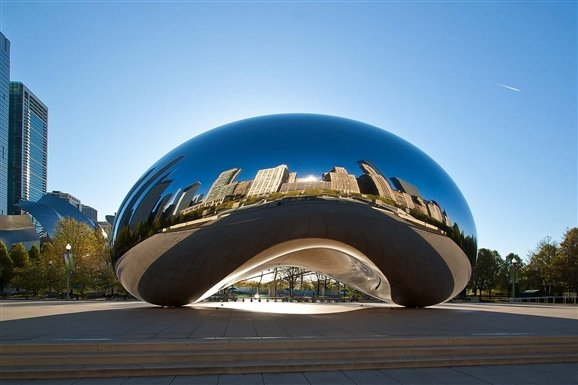
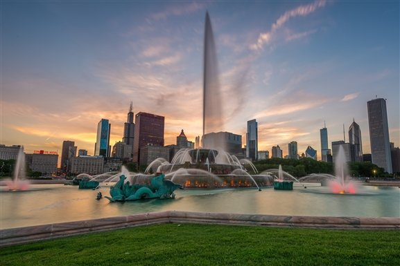

Millennium Park

A first-time visit to Chicago isn't complete without a stop at
Millennium Park. Situated in the Loop just north of the Art Institute
of Chicago, this 24.5-acre space is used to showcase cutting-edge
art, architecture and landscaping; it also acts as a backdrop for
concerts and festivals. Most visitors come to Millennium Park to see
the Crown Fountain and Cloud Gate, better known as "The Bean."
Designed by Spanish artist Jaume Plensa, the Crown Fountain features
two 50-foot towers that face each other at opposite ends of a shallow
reflecting pool. The towers' LED screens project the faces of 1,000
different Chicago residents, which are perfectly aligned with spouts
so that it appears they are spitting water on passersby. Cloud
Gate– created by British artist Anish Kapoor – is a 110-ton
bean-shaped sculpture forged from stainless steel. The Bean's
elliptical shape reflects the Chicago skyline.
There are plenty of other reasons to visit Millennium Park:
You can see a concert at the Frank Gehry-designed Jay Pritzker Pavilion, stroll
through the Lurie Garden or the Boeing Galleries (where contemporary sculpture
is displayed outdoors), or sign up for a Segway tour at the
McDonald's Cycle Center.
On a gorgeous spring, summer or fall day, grab a blanket and picnic basket to
enjoy on the park's grounds. Overall, former visitors said their time in the
park was relaxing and worthwhile, though some mention that you'll likely
encounter a few solicitors and homeless people.
Millennium Park is open daily from 6 a.m. to 11 p.m. The park and its exhibits
are free to visit, and complimentary guided garden and architecture tours are
available on select days between May and September or October. Free audio tours
can also be downloaded from the City of Chicago's website. You can also
download free smartphone apps from the Google Play or iTunes stores for
walking tour ideas, event listings and maps. Additional fees apply for items
purchased at the park's concessions stands and restaurant. Restrooms and a
bike parking area are offered on-site. To get to the park, travelers can
bike, drive and park in one of several adjacent garages, walk from the Loop
or take the L to the Lake, Randolph/Wabash, Monroe
or Adams/Wabash subway stations.
Grant Park and Buckingham Fountain

Often referred to as "Chicago's front yard," Grant Park is a 319-acre
swath of green space that starts at the eastern edge of the Loop and
stretches down to the northern fringes of the Near South Side.
First-time visitors should plan on spending a fair amount of time in
Grant Park: This is where you'll find several of Chicago's most
popular things to do, including The Field Museum, the Art Institute
of Chicago and Shedd Aquarium. (Millennium Park also rubs elbows
with the northwest corner of Grant Park.) Baseball diamonds, flower
gardens, walking paths and wide-open grassy terrain are available
as well.
At the heart of Grant Park is Buckingham Fountain. One of the largest fountains
in the world, this tiered water feature boasts 133 jets that shoot water as high
as 150 feet into the air during 20-minute choreographed displays (which take
place every hour on the hour between 9 a.m. and 10:35 p.m. from April to
October). At night, the fountain's performance is accompanied by lights
and music.
Though some recent travelers said there was little to do in this park, many
appreciated Grant Park's meticulously manicured grounds and superb views of
downtown Chicago. Before you visit the park, be sure to check the Chicago
Park District's website for events listings, since some festivals and
concerts – such as Lollapalooza and Taste of Chicago, which take place
here – cause crowds to swell and some areas to become restricted.
Grant Park is open to visitors every day from 6 a.m. to 11 p.m. Admission to
the park and Buckingham Fountain are free, but select attractions within the
park operate set hours and may charge entry fees. Some of the park's events and
festivals also cost extra. Restrooms, grab-and-go eateries, a playground and a
skate park are offered on-site, and during the winter, visitors can skate on
the park's ice rink. Grant Park can be accessed from a variety of L train stops,
including Monroe, Adams/Wabash, Jackson and Roosevelt – all lines except for
the Yellow and Blue lines service one or more nearby stations. A few parking
garages and limited street parking are available within walking distance.
Lincoln Park Zoo
Located 2 miles north of the Loop in the North Side neighborhood of
Lincoln Park, the Lincoln Park Zoo is home to dozens of species, such as zebras,
sloths and hippos. Visitors can view the zoo's furry (or scaly) friends in
their natural habitats: Check out the gorillas in the sprawling Regenstein
Center for African Apes, or head to the Kovler Seal Pool to get up close and
personal with harbor seals.
Travelers appreciated all of the large mammal species found here, as well as
the zoo's lack of an entrance fee. If you have kids in tow, head to the
Farm-in-the-Zoo exhibit, where little ones can meet barnyard favorites like
cows, pigs and goats. Also, plan on using public transportation or a taxi to
get to the zoo since there's limited availability in the zoo's parking lot and
parking fees start at $20 per vehicle (or $25 per vehicle on weekends) for 31
minutes to 2 hours of parking.
The Lincoln Park Zoo is not within walking distance of an L station, however,
two bus routes – Nos. 151 and 156 – have two Lincoln Park Zoo stops. Bus Nos.
22 and 36 also drop two blocks away from the zoo. The property is open daily
from 10 a.m. to 4:30, 5 or 6:30 p.m. depending on the season. During the zoo's
annual ZooLights light display, gates remain open until 9 p.m. All of the zoo's
exhibits are free to visit, but bring money if you plan on riding the zoo's
carousel and train or purchasing items at the on-site gift shops and cafes.
Visit the Lincoln Park Zoo website to learn more about exhibits, facilities
and special events.
{kind=link}
{kind=link}
{kind=link}
{kind=link}
{kind=link}
{kind=link}
{kind=link}
{kind=link}
{kind=link}
{kind=link}
{kind=link}